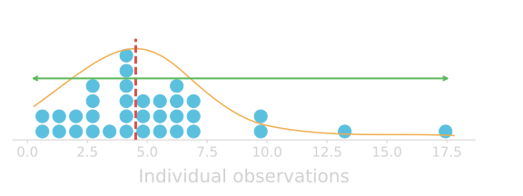

Grading:
Homeworks (25%)
Midterm (35%)
Final (40%)
No official textbook
Homeworks: assigned Mondays (11:00AM) due before the next Monday (10:00AM)
Stats 13
Lecture 1
Introduction
Guillaume Calmettes
Statistics?
Understanding > knowing
Making decision based on Data!
Statistics is the science of
collecting, organizing, presentating, analyzing, and interpreting
data
to assist
in making more effective decisions.
How statistics solved the Cholera transmission problem?
Cholera outbreaks in the world
John Snow
British physician.
He was skeptic about Cholera being caused by pollution or a noxious form of "bad air" (miasma theory).
He is considered one of the fathers of modern epidemiology.
.
(15 March 1813 - 16 June 1858)
Soho cholera epidemics (Sept. 1854)
The most terrible outbreak of cholera which ever occurred in this kingdom. - John Snow -
The first 10 days: > 500 fatalities
John Snow's dataset
Snow tracked the numbers of cholera fatal attacks in the neighborhood.
Categorical
Quantitative
Variables
Observational Units
House
Address
Population
Fatalities
House #1
45 Lexington St
8
5
House #2
15 Broadwick St
21
7
House #3
61 Poland St
4
1
House #4
37 Broad St
27
16
House #5
48 Carnaby St
11
3
House #6
46 Beak St
8
0
House #7
43 Broad St
44
9
Observational units & variables
An observational unit (or case) is the individual entity of interest on which data are recorded.
The recorded characteristics of the observational unit are the variables of interest. Those variables can be quantitative (numerical values) or categorical (category designation).
Categorical & Quantitative variables
A categorical variable divides the observational units into groups.
A quantitative variable measures a numerical quantity for each observational unit.
Name
Year
Gender
GPA
Sibling
Height
Weight
TV
Award
Paul
Senior
M
3.1
2
71
180
3
Olympic
Nicole
Somophore
F
3.4
0
66
140
1
Nobel
Maria
Senior
F
2.9
4
64
135
0
Academy
John
First Year
M
1
68
160
2
None
Chris
Junior
M
3.8
3
72
173
1
Nobel
What are the observational units & variables?
Does louder music cause people to drink more beer?
Do males find females more attractive if they wear red?
Are lions more likely to attack after a full moon?
John Snow's dataset
House
Address
Population
Fatalities
House #1
45 Lexington St
8
5
House #2
15 Broadwick St
21
7
House #3
61 Poland St
4
1
House #4
37 Broad St
27
16
House #5
48 Carnaby St
11
3
House #6
46 Beak St
8
0
House #7
43 Broad St
44
9
Tracking down the outbreak's source
Snow analyzed the spatial pattern of the disease based on:
An outlier is an observed value that is notably distinct from the other values in a dataset. Usually, an outlier is much larger or much smaller than the rest of the data values.
From data to administrative action
On Sep 7, 1854, Snow took his research to the town officials and convinced them to take the handle off the pump.
Still, the scientific community was reluctant to
believe his theory ...
Snow's "Grand Experiment"
Research question:
Is there a causal relationship between water supply and cholera?
Observational units:
"Groups" of people
Variables:
- Occurence of cholera fatal attacks (outcome)
- Type of water supply (explain difference in outcome)
Explanatory & Response variables
A
response variable is the variable about which questions are asked, it measures the outcome of the study.
An explanatory variable is any factor that can influence, explain or predict the response variable.
The response variable is usually called dependent, while the explanatory variable is sometimes called independent.
Does meditation help reduce stress?
Does sugar consumption increase hyperactivity?
The London waterworks landscape
2 major water supply companies
1849 epidemics
1853-1854 epidemics
Lambeth Waterworks
London intake
Seething wells intake
Southwark Vauxhall
London intake
London intake
Experiment & Observational study
An
experiment is a study in which the researcher actively controls one or more of the explanatory variables.
An observational study is a study in which the researcher does not actively control the value of any variable but simply observes and record the values as they naturally exist.
Snow's analysis of deaths data
Data
Analysis
Water supply and cholera occurence
Number of houses
Deaths from cholera
Deaths in each 10,000 houses
Southwark & Vauxhall
40,046
1,263
315
Lambeth Waterworks
26,107
98
37
Rest of London
256,423
1,422
59
New prevention measures enforced
Less people started to question the relevance of the germ theory to cholera.
New prevention and control measures developped to prevent cholera outbreaks (boiling water)
Improving the London waterworks
The S&V company was forced by the Metropolitan Water Act to move its intake to a location far upriver near Hampton.
6 steps of a statistigal investigation
Could water supplied to South London residents by private companies be a principal vector for the transmission of cholera?
Large scale study of cholera fatal attacks in South London (water supply randomly "assigned")
Looking for patterns by comparing the occurence of cholera fatal attacks in the different population groups
People served by sewage-contaminated water seem more affected
by fatal cholera attacks
Contamined water is most likely a source of cholera infection. Cholera is a waterborne disease.
Boiling water mandatory during cholera epidemics.
Need for analyzing water samples (identify "germ").
Summary
Data are everywhere.
A dataset is usually comprised of variables measured on observational units.
Variables can be
Categorical Quantitative
Response Explanatory
Data can be used to provide information about essentially anything we are interested in and want to collect data on!
Statistics is a powerful tool to draw inferences and make decisions.
Collecting a dataset
The population is the entire collection of observational units we are interested in.
A sample is a subset of the population on which we record data.
Numerical summaries about a population are called parameters, and numerical summaries calculated from a sample are called statistics.
Describing a dataset
When describing a dataset, we generally consider the following three questions:
What is the general shape of the data?
Where are the data values centered?
How do the data vary?
These are all aspects of what we call the distribution of the data.

Shape of a distribution
General shape of a distribution
A symetric distribution is one in which the left and right hand sides of the distribution are roughly equally balanced.
A skewed (non-symmetric) distribution is a distribution in which there is no such equal balance. Right-skewness refers to a longer right tail, while left-skewness correspond to a longer left tail.
A uniform distribution is a specific symetric distribution in which all outcomes are equally likely.
Central tendency of a distribution
The mean
A common measure of central location is the (arithmetic) mean.
It is sometimes called the average.
$\bar{x}=\sum x_{i}$
$\bar{x}$ for a sample (reads "x-bar")
$\mu$ for a population
Which corresponds to:
$\bar{x}=\frac{x_{1}+x_{2}+...+x_{n}}{n}$
$\bar{x}=\frac{\textrm{sum of all the observations}}{\textrm{number of observations}}$
The trimmed mean
A trimmed mean refers to the calculation of the mean after discarding given parts of a sample (or distribution) at the high and low end (typically discarding an equal amount of both).
The use of a trimmed mean helps eliminate the influence of data points on the tails that may affect the traditional mean.
The median
The median of a set of ordered data values is: - the middle entry (for an odd number of entries) - the average of the middle 2 values (for an even number of entries)
The mode
The mode is the value that occurs most often in the dataset. If no value in the dataset is repeated, then there is no mode this particular dataset.
What is the mode in the dataset below?
4
5
9
5
11
7
5
3
7
8
6
5
12
Resistance
The term resistance is related to the impact of outliers on a statistic.
In general, we say that a statistic is resistant if it is relatively unaffected by extreme values.
The median and the mode are resistant, while the mean is not.
Other descriptors
The minimum is the smallest number in the (sorted) dataset.
The maximum is the largest number in the (sorted) dataset
Variation in a distribution
The range
The range gives you the most basic information about the spread of a dataset. It is calculated by the (arithmetic) difference between the lowest and highest data value.
The standard deviation
A common measure of data variability is the standard deviation (SD).


 (15 March 1813 - 16 June 1858)
(15 March 1813 - 16 June 1858)